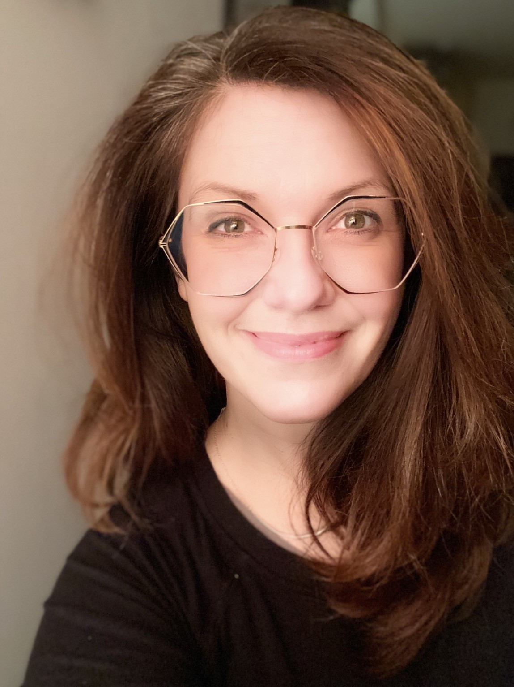

Press kit
Bios & headshot
For event programmes, introductions and articles. Use whichever length fits; no need to ask.


High-res JPG · Credit not required
Short bio
Kaitlin Thaney is the Executive Director of Invest in Open Infrastructure (IOI), a nonprofit dedicated to increasing investment in and adoption of open infrastructure for research. Her career has focused on helping open infrastructure organizations with strategy, program design, participatory engagement, and sustainability. She previously served as Endowment Director at the Wikimedia Foundation and directed the program portfolio at the Mozilla Foundation, where she built the Mozilla Science Lab. She was also on the founding team of Digital Science and developed data-sharing infrastructure at Creative Commons. She serves on the boards and advisory groups of UPFRONT Global, data.org, and Internet Archive Europe.
Long bio
Kaitlin Thaney is the Executive Director of Invest in Open Infrastructure (IOI), a nonprofit initiative dedicated to increasing investment in and adoption of open infrastructure in research. Her career has been centered around open infrastructure organizations, helping them think strategically about program design, participatory engagement, and sustainability.
Prior to IOI, she served as the Endowment Director for the Wikimedia Foundation, where she led development of a fund to sustain the future of Wikipedia and free knowledge. Prior to joining Wikimedia, Thaney directed the program portfolio for the Mozilla Foundation, following her time building the Mozilla Science Lab, a program to serve the open research community. She was on the founding team for Digital Science, where she helped launch and advise programs to serve researchers worldwide, building on her time at Creative Commons, where she crafted legal, technical, and social infrastructure for sharing data on the web.
She also serves on the board and in advisory roles for UPFRONT Global, data.org, and Internet Archive Europe. She previously served as a board member of LYRASIS, Code for Science & Society, and Open Collective Foundation, and as a founding director of DataKind UK.
Links
- IOI profileinvestinopen.org/about/team/kaitlin
- LinkedInlinkedin.com/in/kaythaney
- NewsletterThe Open Stack
- Bluesky@kaythaney.bsky.social
- Mastodon@kaythaney@indieweb.social
- Ceramics@claythaney
Questions or a different format? Get in touch